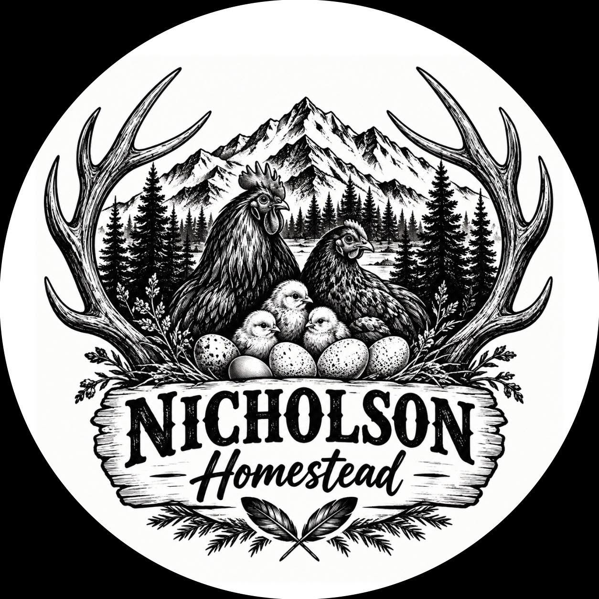
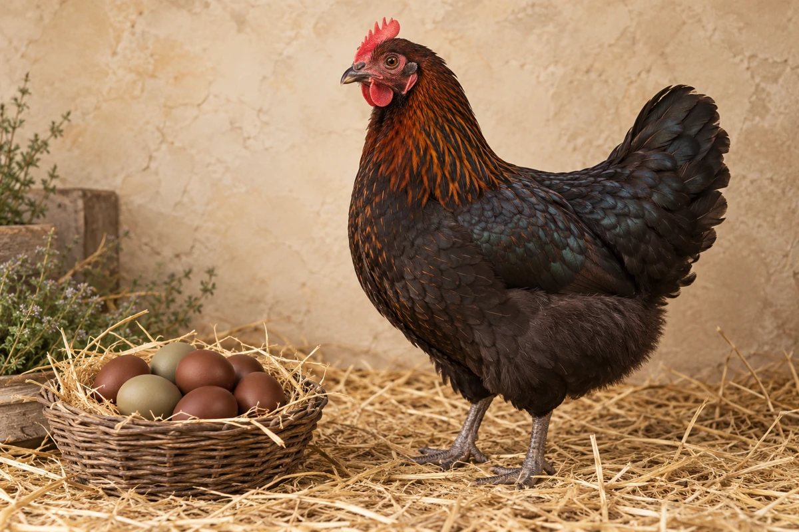

01 / MARANS
Black Copper Marans
Dark plumage, copper accents, and a place in the chocolate-egg conversation.
Non-SOPEnquire about this breed ↗
NICHOLSONH O M E S T E A DLet's talk eggs ↗From rich chocolate browns to earthy olive greens, your next flock starts with a little wonder.
Marans & Olive Eggers • Caldwell, Idaho
Meet our poultry ↗Ask about available eggs ↗
Welcome to Nicholson Homestead, a poultry breeder based in Caldwell, Idaho. Our flock includes Black Copper Marans, Golden Cuckoo Marans, and Olive Eggers.
Whether you're planning your first hatch or bringing new colors to your egg basket, we'd love to hear what you're hoping to raise.
A love for poultry, a palette of natural colors.
Explore our breeds and ask what's available.
Dark plumage, copper accents, and a place in the chocolate-egg conversation.
Non-SOPEnquire about this breed ↗Golden tones and cuckoo-patterned plumage bring character to a colorful flock.
Golden cuckoo varietyEnquire about this breed ↗A little earthy color for your basket, with olive-green egg tones to look forward to.
Naturally colorfulEnquire about this breed ↗Egg colors are illustrative. Actual shades vary by bird and laying cycle. Ask us about current flock and egg details.
Yes, we ship eggs. Message us to discuss current availability, your preferred breed, pricing, and shipping details before making plans.
Ask about hatching eggs ↗Tell us which birds have caught your eye.
Confirm quantities, pricing, timing, and your destination with us.
Discuss shipping and get your incubation setup ready. Hatch results can vary.
We are based in Caldwell, Idaho. Contact us directly to discuss any collection arrangements.
Yes, we ship eggs. Please message us with your breed preference and destination to confirm current shipping options and costs.
Our listed breeds are Black Copper Marans (non-SOP), Golden Cuckoo Marans, and Olive Eggers.
Send us a message on Facebook. Availability and pricing are confirmed directly by Nicholson Homestead.
Hatching outcomes depend on factors including transport, handling, storage, and incubation. Discuss expectations and any applicable terms directly with us before ordering.
Tell us what you have in mind.
We'll take it from there.